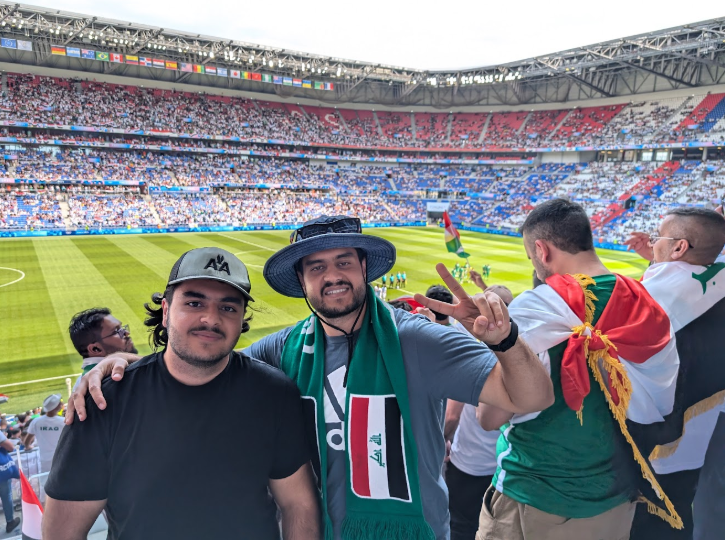

Introduction
Osamah Abdulrahman || Operative Aurochs

Osamah Abdulrahman (left)
- Personal Background: I was born in Iraq and immigrated to the USA, lived here for a majority of my life.
- Professional background: I've created and sold small mods for various games.
- Academic background: I got my Associates of Arts from CPCC and now I'm in UNCC to finish my Bachelors.
- Background in this subject: I've made a few websites for fun and one for a local mosque, other than that I don't have too much experience.
- Programming/Software Background: C++, C#, Python
- Courses I'm Taking and Why:
- ITCS 3160 Database Design - Required Course
- ITSC 2181 Introduction to Computer Systems - I wanted to learn more about computer systems at a deeper level
- ITIS 3130 Introduction to Human-Centered Computing - Required Course
- MATH 2164 Matrices and Linear Algebra - Required Course
- ITIS 3135 Web-Based Application Design and Development - Required Course
- Primary Computer Platform: Windows
- Funny/Interesting item about yourself: I like to be competitive and I enjoy gaming, mainly FPS.
- I'd also like to share: I want to own a motorcycle.